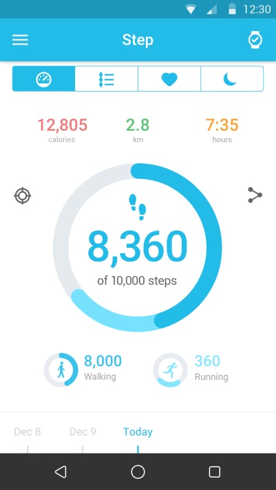

FAQ per il Watch Wi-Fi
Cosa è possibile fare quando il WATCH non può ricevere né effetture chiamate?
- Assicurarsi che la connessione tra il WATCH e il dispositivo sia normale.
- Assicurarsi che il WATCH non sia troppo lontano dal dispositivo.
- Verificare se è stata autorizzata la connessione per la chiamata. Sul dispositivo viene visualizzata un'icona Bluetooth
 dopo la conferma, quindi è possibile effettuare e ricevere chiamate.
dopo la conferma, quindi è possibile effettuare e ricevere chiamate.

Come ottenere i risultati più precisi per la frequenza cardiaca?
Per la massima precisione dei risultati, stringere saldamente il WATCH intorno al polso. Persino in condizioni ideali, è possibile che il WATCH non sia in grado di ottenere una lettura affidabile della frequenza cardiaca per tutti. Per una piccola
percentuale di utenti, vari fattori possono impedire di ottenere una lettura della frequenza cardiaca. Un paio di accorgimenti possono aiutare il WATCH a ottenere le migliori e più coerenti letture della frequenza cardiaca possibili:
- Il retro del WATCH deve essere a contatto con la pelle.
- Il WATCH deve essere saldamente stretto intorno al polso, ma mantenendo un po' di spazio per consentire alla pelle di respirare e ai sensori di funzionare.
- È possibile stringere il WATCH per gli allenamenti e allentarlo al termine.
- I sensori funzionano soltanto se si indossa il WATCH sopra il polso.
Se il WATCH non resta in posizione o se la frequenza cardiaca non è misurabile, stringere un po' il cinturino. Il WATCH deve essere indossato stretto, ma confortevole.

Cosa è possibile fare quando il WATCH non risponde?
Tenere premuto per 8 secondi il tasto di accensione per riavviare il WATCH. Questa operazione serve solo in caso di emergenza.
Perché il WATCH talvolta vibra improvvisamente?
- Verificare se è stata ricevuta una notifica.
- Assicurarsi che il WATCH non sia troppo lontano dal dispositivo.
Cosa è possibile fare quando la vibrazione non funziona?
- Caricare la batteria e assicurarsi che sia carica.
- Assicurarsi che la connessione tra il WATCH e il dispositivo non sia interrotta.
Cosa è possibile fare quando il WATCH non si carica?
- Assicurarsi che i piedini nel supporto di ricarica siano allineati con i piedini nel cover posteriore del WATCH.
- Assicurarsi che il cavo USB sia inserito saldamente nella porta USB.
- Talvolta, se la batteria del WATCH è completamente esaurita, è necessario un certo tempo per attivare la batteria e il sistema.
Perché il consumo della batteria aumenta dopo l'installazione dell'app MOVETIME e la connessione del WATCH al dispositivo?
Questo fenomeno è normale e il consumo include:
- Mantenimento della connessione tra il WATCH e il dispositivo.
- Trasferimento di file tra il WATCH e il dispositivo.
- Disconnessione, scansione del dispositivo e riconnessione.
Quanti dispositivi BT 4.0 Low Energy (BLE) al massimo è possibile connettere al dispositivo?
Al dispositivo è possibile connettere soltanto 1 dispositivo BLE al massimo.
Cosa è possibile fare quando il WATCH si disconnette spesso dal dispositivo?
- Assicurarsi che l'app MOVETIME non sia stata arrestata da uno strumento del sistema. Se è stata arrestata, riavviare l'app.
- Assicurarsi che la comunicazione tra il WATCH e il dispositivo sia normale.
a) Verificare l'app MOVETIME sul telefono. Se il WATCH si connette al dispositivo, sarà visualizzata un'icona
 nell'angolo superiore destro. Se il WATCH non si connette,
nell'angolo superiore destro. Se il WATCH non si connette,
 cambierà in
cambierà in
 al centro dell'icona.
al centro dell'icona.

b) Se si vede l'icona Bluetooth
 sul WATCH, significa che il WATCH non è riuscito ad associarsi al dispositivo.
sul WATCH, significa che il WATCH non è riuscito ad associarsi al dispositivo.
Come è possibile ripristinare le impostazioni di fabbrica del WATCH?
- Se nessuna delle risposte precedenti risolve il problema, tentare di ripristinare il WATCH.
- Nell'app MOVETIME, toccare
 e quindi Watch->Impostazioni->Ripristino di fabbrica per ripristinare il WATCH.
e quindi Watch->Impostazioni->Ripristino di fabbrica per ripristinare il WATCH.
- Tenere premuto per 10 secondi il tasto di accensione per ripristinare il WATCH.